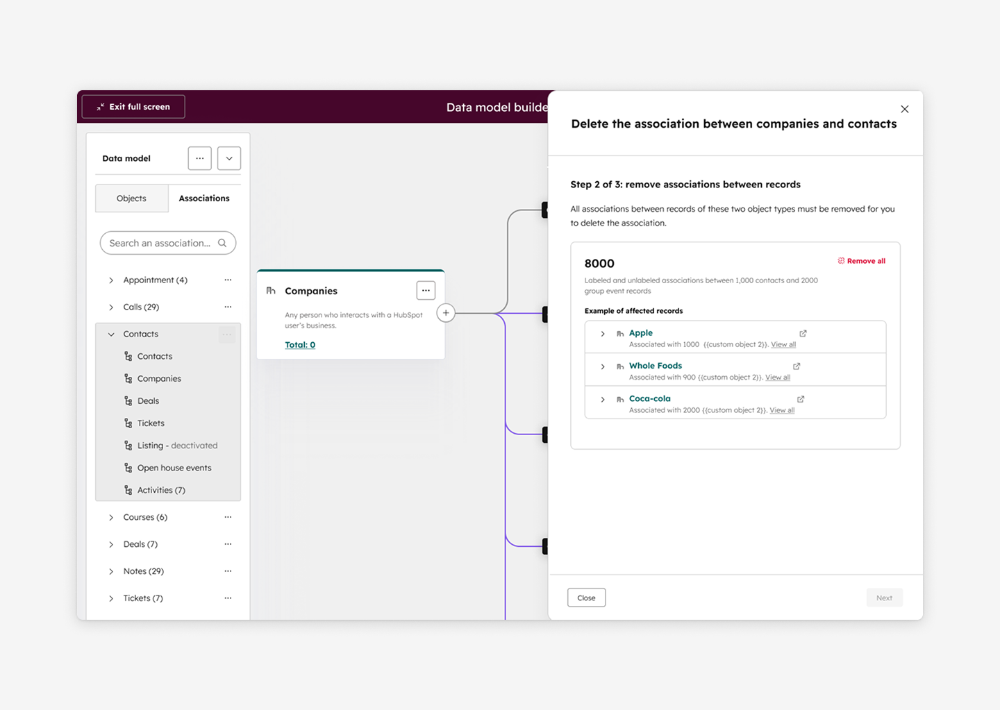

Simplifying Association Deletion in the CRM Data Model Builder
Reducing a 50-step technical workflow to a 3-step guided experience for CRM administrators
In HubSpot's CRM data model, associations define relationships between objects (for example, Contacts ↔ Deals). Associations can also include labels that describe the type of relationship.
Before this project, once an association definition was created, users could not delete it through the UI. The only option was to use the API and manually remove all dependencies first.
This limitation became more significant after we launched the Data Model Builder, a no-code schema builder that enables users to visually design their CRM data structure.
Role
Senior Product Designer
Team
PM, FE/BE Engineers, Platform
Timeline
Q1-Q2
Context
Rapid adoption: Within three months of launching the Data Model Builder, association creation increased 200%.
Growing demand: Customer feedback requesting association deletion via UI increased significantly.
Common use cases: Users need deletion when experimenting with schema designs, testing with sample data, or iterating as business needs evolve.
Expanding audience: The user base expanded beyond DataOps specialists and engineers to include "accidental admins"—users responsible for CRM configuration without technical backgrounds.
UI accessibility gap: As the Data Model Builder expanded, schema management workflows that previously relied on APIs needed to become accessible through UI.
The Problem
Complex dependencies: Deleting an association involves multiple layers—assets (workflows, reports, views), records, and association labels with their own dependencies.
Scale problem: An association can contain up to 50 labels, each potentially used across records and assets.
Label-by-label cleanup: The system required resolving dependencies label by label, meaning users might have to repeat the cleanup process up to 50 times.
Poor UX exposure: While technically accurate, exposing this process directly in the UI would create a tedious and confusing experience.

Design Goal
Enable users to safely delete associations through the UI while minimizing repetitive cleanup work.
Avoid exposing internal system complexity to users.
Provide a clear and predictable mental model for non-technical users.
Key Insight
User perspective: Users do not think about dependencies in terms of associations vs. labels. Instead, they think about where the relationship appears.
Three simple categories: From a user perspective, dependencies fall into three simple categories: (1) relationships between records, (2) usage inside assets (workflows, reports, views), and (3) label definitions.
Simplified model: This insight allowed us to collapse a highly nested technical process into a simpler conceptual model.
Solution
I redesigned the deletion experience into three high-level stages.
-
Step 1 — Remove associations from records
Users remove relationships between records (both labeled and unlabeled). -
Step 2 — Clear associations from assets
The system identifies assets such as workflows, reports, and views that use the association and guides users to remove them. -
Step 3 — Delete label definitions
Once dependencies are cleared, the label definitions can be deleted.

Why This Works
Reduced complexity: This approach reduces a potential 50-cycle dependency process into three guided steps.
Clear mental model: Provides a simple conceptual framework for non-technical users to understand.
Eliminated repetition: Removes the need for repetitive label-by-label cleanup.
Scalable pattern: Creates a reusable approach for other deletion workflows across the platform.
Supporting this design required additional backend work to consolidate dependency checks. I worked with the engineering team to align on the long-term UX value and prioritize the technical changes.
System Thinking
Reusable pattern: Rather than designing this as a one-off solution, I structured the flow as a reusable dependency-resolution pattern.
Modular components: Each step functions as a modular component that identifies dependencies, guides cleanup actions, and confirms readiness for deletion.
Cross-team adoption: This architecture allowed another team to adopt the same pattern for association label deletion, creating a consistent experience across the CRM platform.
Outcome and Impact
Final implementation phase; scheduled for Mid-Q2 2026 launch.
Radical Workflow Simplification: Transformed a highly manual, 50-step technical process into an intuitive 3-step guided flow, reducing time-to-task completion and cognitive load.
Design System Contribution: Established a high-integrity deletion pattern that was subsequently codified and adopted for Association Label Deletion, driving cross-product UI consistency.
Anticipated CSAT Growth: Projected a +5% increase in CSAT based on early evaluative research and positive sentiment trends from beta participants.
Operational Cost Reduction: Expected to significantly decrease support overhead by self-serving a historically high-touch "Association Management" request volume.
What I Learned
Start with system complexity, not UI: Understanding the technical dependency graph with engineers early helped prevent designing an interface that mirrored internal system complexity.
Design mental models, not workflows: Simplifying the user's conceptual model had a bigger impact than simply reducing steps.
Build patterns, not features: Designing reusable dependency-resolution components allowed the pattern to scale across multiple deletion scenarios.
Next Steps
Help users identify and remove association usage directly inside assets.
Provide jump-to locations for faster cleanup.
Monitor customer feedback after launch to refine the workflow.